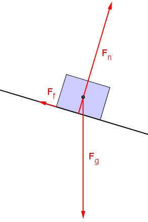
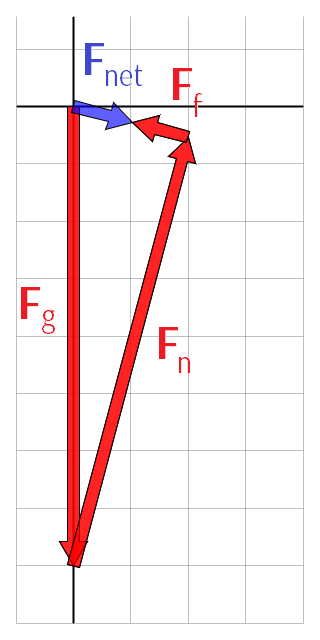

Newton’s 2nd Law
$$\vec{\mathbf F}_{net} = m\vec{\mathbf a}$$The symbol \(\vec{\mathbf F}_{net}\) refers to the total of all forces acting on the mass.
- The net force is also called the unbalanced or resultant force.
Free Body Diagrams

A free body diagram is an illustration that shows the forces acting on an object.
- Each force is drawn as a vector pointing in the direction that the force acts.
- The length of each vector illustrates how strong the force is.
- For a mass on a ramp, the forces are:
- gravitational force pulling down
- normal force pushing perpendicular to the ramp
- friction parallel to the ramp, opposite to the motion
Free body diagrams are used to clarify the interactions that an object is experiencing, in order to determine the object’s acceleration.
Vector Diagrams
A free body diagram should not be confused with a vector diagram.

- The vector diagram illustrates the same three forces as the free body diagram.
- The main difference is that the arrows representing the force vectors have been redrawn “tip-to-tail” to show the resultant (net) force.
- Vector diagram are drawn exactly the same for forces as for displacement.
- For an object moving horizontally, the vertical forces must balance and the net force will be the total of the horizontal forces.
- For an object moving vertically, the horizontal forces must balance and the net force will be the total of the vertical forces.